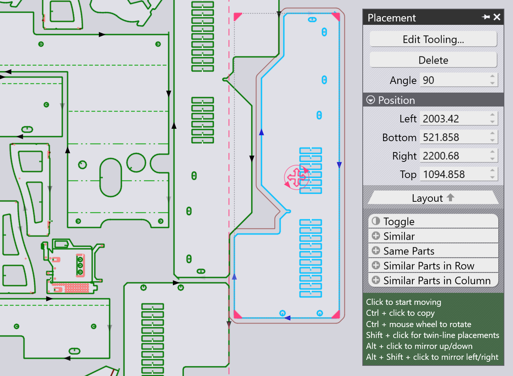

Plaatsingsvenster
Een stuk dat is toegevoegd (of een bestaand stuk op de lay-out) kan worden verplaatst, gedraaid of herhaald met het Plaatsingsvenster dat verschijnt wanneer u op het stuk klikt:

-
De instellingen Left,Bottom, Right en Top zijn de grenzen van het begrenzingsvak van het stuk, en deze kunnen worden gebruikt om het stuk precies te positioneren.
-
U kunt ook gewoon op de rode ronde greep in het midden van het stuk klikken en het slepen om het op de plaat te plaatsen. Terwijl u het stuk sleept, voegt TecZone Laser hulplijnen toe om u te helpen het stuk te positioneren met een nauwkeurige spleet (brugbreedte) naar de aangrenzende stukken. Terwijl het stuk wordt geplaatst, wordt er ook een omtrek rond het stuk getekend, op afstand van de werkelijke stukcontour met de breedte van de brug.
-
De instelling Angle kan worden gebruikt om het stuk te draaien zodat andere oriëntaties kunnen worden uitgeprobeerd. Wanneer u het stuk sleept aan zijn sleepgreep, u kunt ook de toets Ctrl ingedrukt houden en het muiswiel draaien om het stuk interactief te draaien.
-
Gebruik Ctrl+klik om een kopie van het stuk te maken en begin vervolgens met het slepen van die kopie.
-
Gebruik Alt+klik om het stuk verticaal te spiegelen, en Alt+Shift+klik om het stuk horizontaal te spiegelen.
-
Er zijn verschillende selectors aan de onderkant van dit venster:
-
Klik op Omschakelen om de geselecteerde stukken te deselecteren en al het andere te selecteren.
-
Klik op Similar alle kopieën van hetzelfde stuk onder dezelfde hoek te selecteren.
-
Klik op Same Parts alle kopieën van hetzelfde stuk te selecteren (ongeacht te draaihoek).
-
Klik op Similar Parts in Row om alle stukken onder dezelfde hoek en in dezelfde horizontale positie te selecteren.
-
Klik op Similar Parts in Column om alle stukken onder dezelfde hoek en in dezelfde verticale positie te selecteren.
-
TwinLine (common-line) plaatsing
Door Shift+klik te gebruiken om een stuk te slepen, wordt de plaatsing in twinline-modus gezet - wanneer u twee parallelle randen dicht bij elkaar sleept, klikt TecZone Laser ze aan elkaar met precies één snijvoeg afstand ertussen, zodat ze beide als een gemeenschappelijke lijn kunnen worden gesneden. Hier is een voorbeeld van zo 'n moment als we een stuk slepen met Shift+klik:

Wanneer de muis wordt losgelaten, vormen de twee stukken één Twinline-groep waarbij de gedeelde lijn slechts één keer wordt gesneden (u kunt zien dat er slechts één snijlijnpijl is bij de diagonale lijn in het midden).

Herhalen en groeperen van stukken

U kunt een stuk selecteren en vervolgens de vier grepen op de hoeken van het begrenzingsvak gebruiken om het stuk te herhalen. Dit kan zelfs met een groep stukken die zijn geselecteerd. Hier is een voorbeeld waar we beginnen met twee aangrenzende stukken die zijn geselecteerd en klikken op de hoekgreep om het naar buiten te slepen:

Wanneer u het vereiste aantal rijen en kolommen heeft, kunt u klikken om de herhaalde stukken in te voegen:
Herhalen met TwinLine
Als u begint met één stuk of een Twinlined unit van meerdere stukken , kunt u Shift ingedrukt houden terwijl u de hoek naar buiten sleept om een Twinline herhaling te doen:

Groeperen
Wanneer u meerdere stukken heeft geselecteerd, kunt u klikken op de knop Group om ze als een unit te groeperen. Dan, werken alle bewerkingen zoals verplaatsen, draaien , spiegelen en herhalen op deze Group. Wanneer een groep is geselecteerd, kunt u klikken op Ungroup om deze groepering uit elkaar te halen en te weer te behandelen als afzonderlijke stukken.
Stukuitrusting bewerken
De knop Edit Tooling van het venster Plaatsing kan worden gebruikt om de lasersnij-uitrusting van een of meer geselecteerde stukken direct aan te passen in de context van de lay-out. Selecteer eerst een groep vergelijkbare stukken waarvan u de uitrusting te wilt bewerken:

Alle andere stukken worden grijs gemaakt, TecZone Laser zoomt in op de geselecteerde stukken en u kunt dan de uitrusting van het stuk bewerken. Laten we in dit voorbeeld aannemen dat we een Scrap cutting-bewerking toevoegen aan een van de ronde uitsparingen om deze ponsafvaldop te verschroten:

Als u een bewerking uitvoert (zoals het toevoegen verschroten van ponsafvaldoppen), kunt u zien dat de bewerking wordt toegepast op alle geselecteerde stukken. Door ergens buiten de groep stukken die worden bewerkt te klikken, keert u terug naar de volledige lay-out. U kunt zien dat aan de drie geselecteerde stukken het verschrotingsgereedschap is toegevoegd.